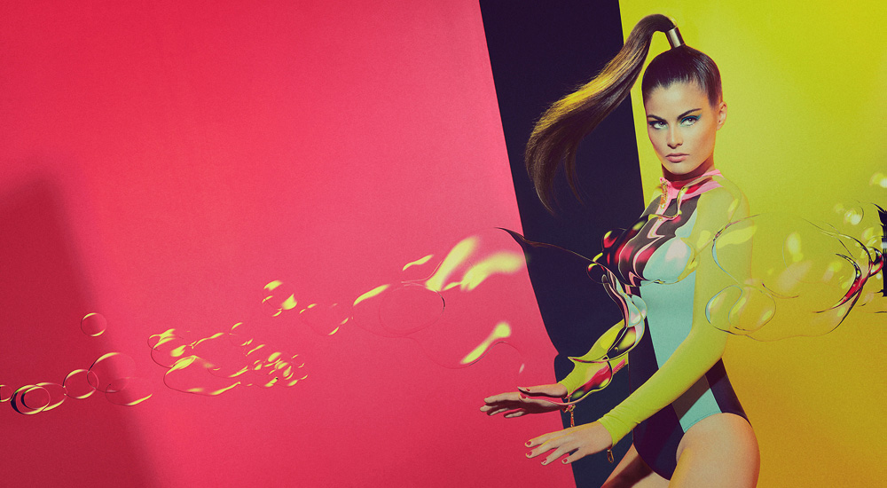

17 Inspiring Examples of Parallax Scrolling Sites
When it comes to parallax scrolling, the line that separates good and bad choices is pretty thin. A while back parallax was being used to deliver an explosion of elements floating around the screen.